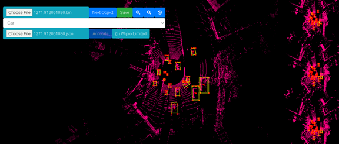

Gallery

WIRIN is an acronym for the Wipro and IISc Innovation Network. This dataset is part of the autonomous car project, which is one of the projects in the WIRIN network. The Autonomous Car is an institutional level project. Its participants include Wipro, Indian Institute of Science (IISc )and the R.V. College of Engineering (RVCE), Bangalore, in a technical capacity. National Institute of Design (NID) is offering website design support. The project staff includes undergraduate students, Masters students, professors, consultants and companies associated with autonomous car development & technologies related to it. Bangalore has been and continues to be in the state of transportation infrastructure growth. The WIRIN dataset has extensive coverage of numerous traffic scenarios encountered within the Bangalore urban area. WIRIN dataset comprises over 2000 semantic and point cloud images each, and 29 dataset classes. These cover the roadway, traffic conditions and vehicles frequently encountered in Bangalore’s urban traffic environment and its outskirts. The dataset has been collected empirically and continues to be expanded. The car drives through traffic and captures the video using a camera attached to the front of the car. The WIRIN dataset is a Fine Type dataset. This means that each class delineates boundaries with pixel-level precision. It is a collection of images to be used for training an autonomous car.